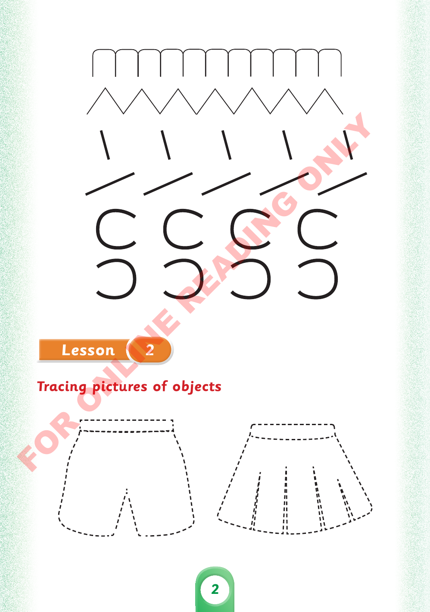

Unit One - Lesson 2: Tracing pictures of objects

Exact source image for printed page 2: Unit One - Lesson 2: Tracing pictures of objects.
Unit One - Lesson 2: Tracing pictures of objects.
Trace the two pictures shown above
Use the drawing pads to complete the picture tasks shown above
Drawing area 1
Clear drawing
Keyboard alternative
Describe what you would draw
Drawing area 2
Clear drawing
Keyboard alternative
Describe what you would draw